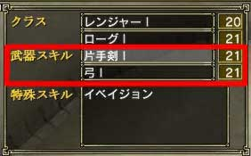
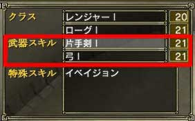

武器スキルのレベルを100まで上げることで、上位ランクの武器スキルを取得できます。レベルを上げたら、町にいる「武器スキル技師範」に話しかけてください。取得するかどうかの確認のダイアログが出るので、OKを選ぶと取得します。
ただし上位ランクの武器スキルを覚えると、今まで使っていた武器スキルのレベルは0に戻ります。さらに上位ランクのスキルのレベルを上げるためには、ホームに戻り武器スキルを変更しなくてはいけません。
また下位ランクで覚えた特殊武器スキルは、上位ランクでも使うことができます。
例を挙げると、弓I と短剣I を使用しているキャラクターが、弓II を取得した場合、弓I のレベルは0に戻りますが、短剣I のレベルはそのままなので安心してください。それと弓I で覚えた「パワーシュート」は、弓II でもそのまま使うことができます。 |
|
 
